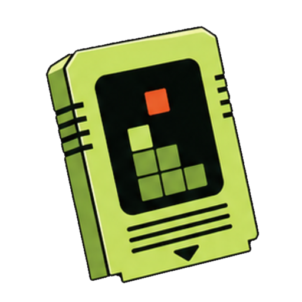
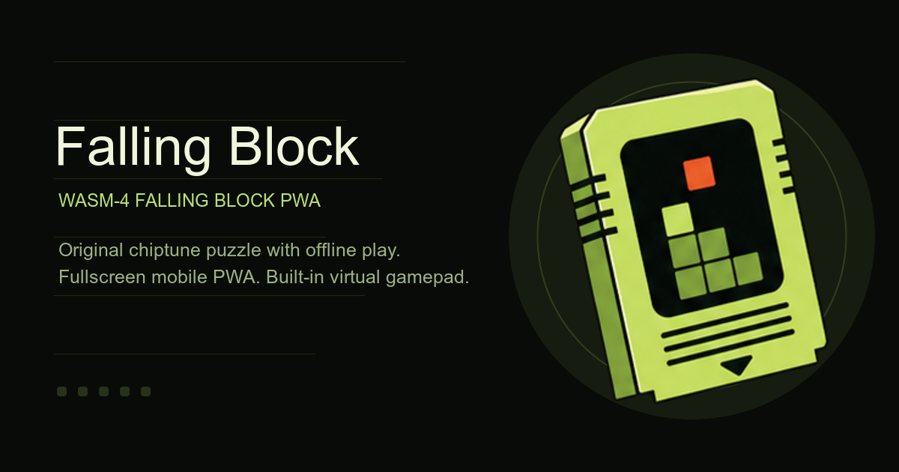

App icon
512px transparent PNG
Pure cartridge icon with the outer tile removed; used for the PWA icon set and wrapped into the SVG favicon source.
Selected direction
Falling Block now uses the selected C-extension B mark as a pure icon: a tilted retro cartridge with a lime body, black play window, and orange active block. The mark no longer includes an app-tile background, so it can sit directly on the PWA shell, install surfaces, and social preview artwork.

App icon
Pure cartridge icon with the outer tile removed; used for the PWA icon set and wrapped into the SVG favicon source.

Main visual
Uses the same selected icon so social previews, install prompts, and the app shell share one visual system.